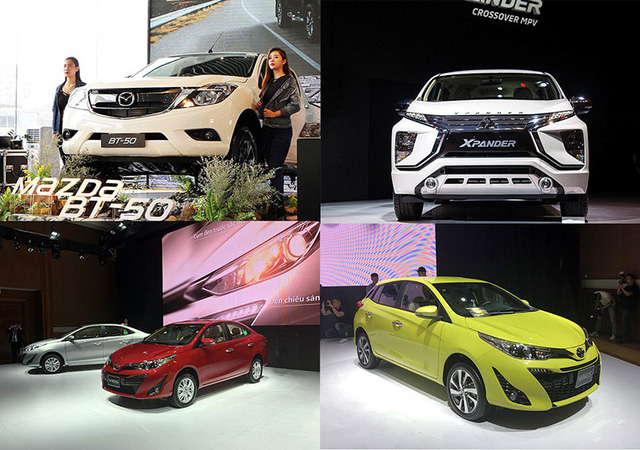

Thông kê sơ bộ của Tổng cục Hải quan cho thấy trong tuần qua, số lượng ôtô có nguồn gốc từ Thái Lan và Indonisia chiếm tới 81% tổng số xe nhập khẩu vào Việt Nam, trong đó, hầu hết là các dòng xe du lịch dưới 10 chỗ và xe bán tải.
Với thế mạnh là điểm đặt nhà máy của các thương hiệu lớn như Ford, Chevrolet, Toyota, Mazda, Honda… Thái Lan và Indonesia được các hãng xe lớn này lựa chọn để lắp ráp nhiều mẫu xe, không chỉ đáp ứng ngay thị trường nội địa mà còn đủ để cung ứng cho các thị trường khác trong khu vực. Với năng lực sản xuất, kinh nghiệm và chính sách hỗ trợ phát triển của hai nước này, các dòng xe ngày càng vươn xa sang các nước khác trong khu vực (trong đó có Việt Nam). Thậm chí, Thái Lan còn trở thành thị trường sản xuất ôtô đứng thứ 12 trên thế giới, với sản lượng mỗi năm đạt khoảng 2 triệu xe, trong đó tiêu thụ nội địa khoảng 800.000 xe, còn lại là xuất khẩu.
Để có được điều này, nền công nghiệp ôtô của Indonesia và Thái Lan được chính phủ ưu đãi khá nhiều để phát triển (tăng cường ưu đãi về thuế suất, tỉ lệ nội địa hoá, hỗ trợ sản xuất linh/phụ kiện trong nước, xiết chặt xe nhập khẩu) và đã trải qua một quá trình và thời điểm được tính toán kĩ. Kết quả là khi kinh tế khu vực ASEAN mở cửa giữa các thành viên, ôtô từ Thái Lan và Malaysia, tràn ngập các thị trường khác, trong đó có Việt Nam. Chính vì vậy, bài toán mà nền công nghiệp Việt Nam đang đặt ra trong giai đoạn này (tăng tỉ lệ nội địa hoá, xiết chặt nhập khẩu xe nguyên chiếc) - giống như các nước khác đã thực hiện cả chục năm nay liệu có phải là phương án tối ưu?
Trở lại với số liệu thống kê từ Tổng cục Hải quan, trong tuần qua (từ ngày 3/8/2018 đến ngày 9/8/2018) số lượng ô tô nguyên chiếc các loại đăng ký tờ khai hải quan nhập khẩu đã giảm so với lượng nhập khẩu trong tuần trước.
Trong khi đó ở phân khúc từ 9 chỗ trở xuống, đã có 1.024 chiếc làm thủ tục nhập khẩu vào Việt Nam, trị giá 18,7 triệu USD, chiếm 79,6% lượng ô tô nguyên chiếc các loại nhập khẩu (chỉ thấp hơn tuần trước 34 chiếc). Số xe này chủ yếu là từ Indonesia - với 491 chiếc (với các dòng xe của Toyota và Mitsubishi), tiếp theo là xe xuất xứ Thái Lan với 340 chiếc, xe Trung Quốc với 70 chiếc, xe Mexico với 68 chiếc.
Ở phân khúc xe trên 9 chỗ ngồi, trong tuần qua chỉ có 6 chiếc được nhập khẩu từ Trung Quốc, trị giá gần 44,9 nghìn USD. Trong khi đó ở phân khúc xe tải (bao gồm cả xe bán tải), đã có 209 chiếc làm thủ tục nhập khẩu vào Việt Nam (207 chiếc xuất xứ Thái Lan và 2 chiếc xuất xứ Hàn Quốc), với giá trị đạt 4,84 triệu USD, giảm mạnh so với con số 769 chiếc của tuần trước.
Ở phân khúc xe chuyên dụng (xe cứu thương, xe chở tiền, xe chở rác…), các doanh nghiệp Việt Nam nhập khẩu 48 chiếc xe chuyên dụng với trị giá khai báo 7,7 triệu USD. Trong đó, chủ yếu xe có xuất xứ từ Trung Quốc với 16 chiếc, từ Đức với 13 chiếc, từ Hàn Quốc với 8 chiếc, từ Italia với 5 chiếc, từ Pháp với 4 chiếc…
Đặc biệt, việc nhập khẩu ở mảng linh kiện và phụ tùng ô tô đã có mức tăng lên tới 38% so với tuần trước khi đã có 74,3 triệu USD được dùng để mua linh kiện, phụ tùng ô tô các loại (tuần trước là 53,9 triệu USD). Các nhóm hàng này có xuất xứ rất đa dạng, chủ yếu từ Hàn Quốc với 17,5 triệu USD, từ Nhật Bản với 16 triệu USD, từ Trung Quốc với 13,5 triệu USD, từ Thái Lan với 12,8 triệu USD, từ Đức với 5,2 triệu USD, từ Inđônêxia với 4,1 triệu USD.